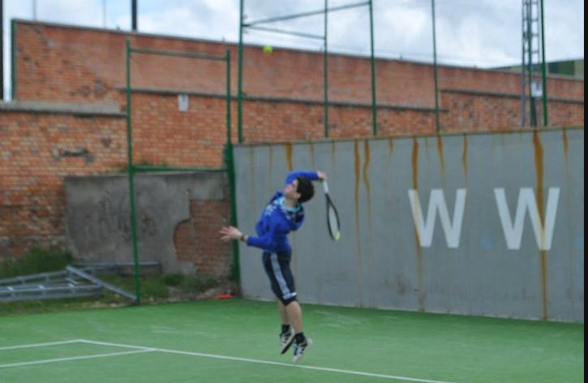

Back in 1995, my parents decided to make my first commit in this town, and I spent here the first 17 years of my life. Such a lovely city.

I walked by those years mostly playing tennis and studying
I was never a social animal, but thanks to my parents and the influence of some friends, I started building my personality. Outgoing, adventurous, frequent traveller and active as heck (I am learning to stand still doing nothing for more than an hour)